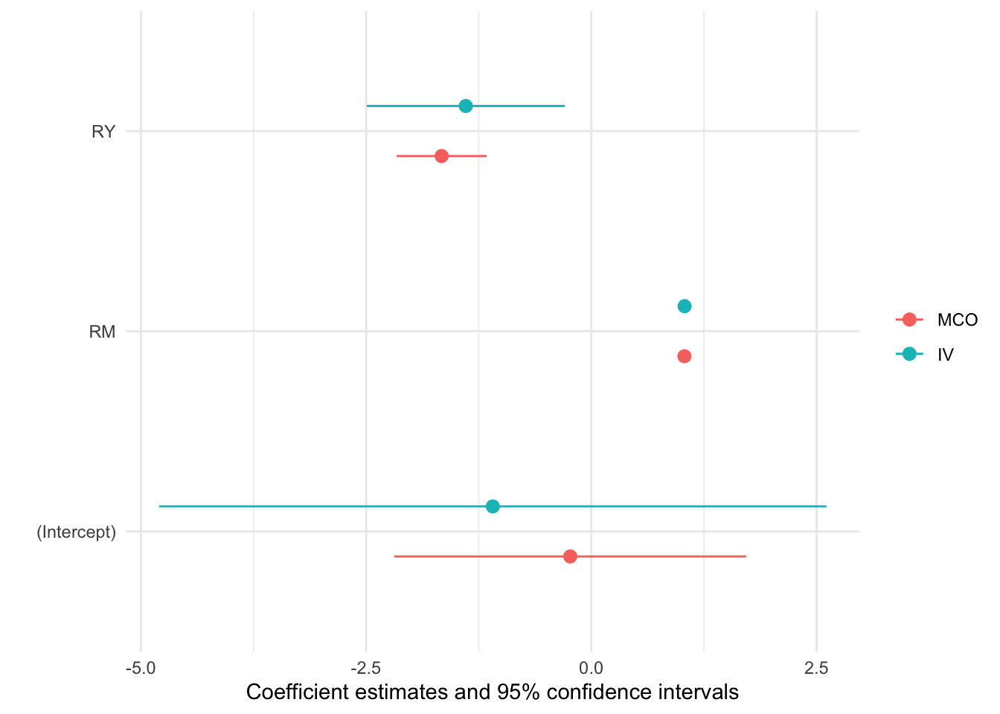

Aplicación 3.11 (Regresores endógenos - El estimador de variables instrumentales: Determinantes de la inflación al nivel internacional
Para explicar las variaciones que se producen en la inflación observada al nivel internacional (muestra de 76 países) se propone el siguiente modelo econométrico, el cual se obtiene de la teoría cuantitativa del dinero:
\[INF_{i} = \beta_1 + \beta_2 RM_{i} + \beta_3 RY_{i} + e_{i}\]
siendo \(INF\) la inflación (tasa de variación del índice general de precios), \(RM\) la tasa de crecimiento de la oferta monetaria, y \(RY\) la tasa de crecimiento del PIB.
Se asumirá que la variable \(RM\) es exógena (política monetaria independiente), mientras que se supondrá que la variable \(RY\) podría ser endógena y, por tanto, puede estar correlacionada con el término de error del modelo, \[Cov(RY,e)≠0\]
Como instrumentos para la variable potencialmente endógena \(RY\) se tomarán el nivel inicial de PIB per cápita (\(YPC0\)), el nivel de educación relativo de la población (\(EDUC\)), el nivel de inversión (\(INV\)) y la tasa de crecimiento de la población (\(RPOB\) ).
Código R
# Lectura de librerías
library(tidyverse)
library(ivreg)
# Para más detalles sobre el método de variables instrumentales
# (IV o 2SLS en inglés) ver las páginas web:
# https://cran.r-project.org/web/packages/ivreg/vignettes/ivreg.html
# https://cran.r-project.org/web/packages/ivreg/vignettes/
# /Diagnostics-for-2SLS-Regression.html
#
# Lectura de datos
INF_INT <- read_csv("data/INF_INTERN.csv")
summary(INF_INT) EDUC INF INV RM
Min. :0.1400 Min. : -0.600 Min. :0.0868 Min. : 2.500
1st Qu.:0.6325 1st Qu.: 4.275 1st Qu.:0.1790 1st Qu.: 8.175
Median :0.9350 Median : 8.650 Median :0.2278 Median : 16.350
Mean :0.8259 Mean : 25.354 Mean :0.2240 Mean : 29.590
3rd Qu.:1.0600 3rd Qu.: 17.150 3rd Qu.:0.2565 3rd Qu.: 22.400
Max. :1.6400 Max. :374.300 Max. :0.4210 Max. :356.700
RPOB RY YPC0
Min. :0.100 Min. :-0.600 Min. :0.2370
1st Qu.:1.175 1st Qu.: 1.675 1st Qu.:0.5042
Median :2.250 Median : 2.700 Median :0.9190
Mean :2.012 Mean : 2.997 Mean :1.7034
3rd Qu.:2.800 3rd Qu.: 4.000 3rd Qu.:2.4505
Max. :3.700 Max. : 9.600 Max. :7.3800 # Estimación MCO
modelo_MCO <- lm(INF ~ RM + RY, data=INF_INT)
summary(modelo_MCO)
Call:
lm(formula = INF ~ RM + RY, data = INF_INT)
Residuals:
Min 1Q Median 3Q Max
-24.799 -1.235 0.101 1.848 9.076
Coefficients:
Estimate Std. Error t value Pr(>|t|)
(Intercept) -0.234214 0.979925 -0.239 0.812
RM 1.033131 0.009042 114.257 < 2e-16 ***
RY -1.662006 0.250566 -6.633 4.95e-09 ***
---
Signif. codes: 0 '***' 0.001 '**' 0.01 '*' 0.05 '.' 0.1 ' ' 1
Residual standard error: 4.31 on 73 degrees of freedom
Multiple R-squared: 0.9948, Adjusted R-squared: 0.9947
F-statistic: 6978 on 2 and 73 DF, p-value: < 2.2e-16# Estimación VI
modelo_IV <- ivreg(INF ~ RM + RY | RM + EDUC + INV + RPOB + YPC0,
data=INF_INT)
summary(modelo_IV, diagnostics=TRUE)
Call:
ivreg(formula = INF ~ RM + RY | RM + EDUC + INV + RPOB + YPC0,
data = INF_INT)
Residuals:
Min 1Q Median 3Q Max
-24.633 -1.487 0.204 1.937 9.498
Coefficients:
Estimate Std. Error t value Pr(>|t|)
(Intercept) -1.093985 1.858208 -0.589 0.5579
RM 1.035059 0.009773 105.914 <2e-16 ***
RY -1.394200 0.551503 -2.528 0.0136 *
Diagnostic tests:
df1 df2 statistic p-value
Weak instruments 4 70 4.642 0.00221 **
Wu-Hausman 1 72 0.300 0.58551
Sargan 3 NA 2.455 0.48344
---
Signif. codes: 0 '***' 0.001 '**' 0.01 '*' 0.05 '.' 0.1 ' ' 1
Residual standard error: 4.344 on 73 degrees of freedom
Multiple R-Squared: 0.9947, Adjusted R-squared: 0.9946
Wald test: 6852 on 2 and 73 DF, p-value: < 2.2e-16 # Comparación de modelos
# car::compareCoefs(modelo_MCO, modelo_IV)
library("modelsummary")
model_list <- list(MCO = modelo_MCO, IV = modelo_IV)
msummary(model_list)| MCO | IV | |
|---|---|---|
| (Intercept) | −0.234 | −1.094 |
| (0.980) | (1.858) | |
| RM | 1.033 | 1.035 |
| (0.009) | (0.010) | |
| RY | −1.662 | −1.394 |
| (0.251) | (0.552) | |
| Num.Obs. | 76 | 76 |
| R2 | 0.995 | 0.995 |
| R2 Adj. | 0.995 | 0.995 |
| AIC | 442.7 | 443.9 |
| BIC | 452.0 | 453.2 |
| Log.Lik. | −217.340 | |
| F | 6978.325 | |
| RMSE | 4.22 | 4.26 |
modelplot(model_list)
Código Python
# Lectura de librerías
import numpy as np
import pandas as pd
import statsmodels.api as sm
from linearmodels.iv import IV2SLS
# Lectura de datos
INF_INT = pd.read_csv('data/INF_INTERN.csv')
INF_INT.describe() EDUC INF INV ... RPOB RY YPC0
count 76.000000 76.000000 76.000000 ... 76.000000 76.000000 76.000000
mean 0.825921 25.353947 0.223951 ... 2.011842 2.997368 1.703421
std 0.319229 58.947670 0.066628 ... 1.021759 2.026950 1.765252
min 0.140000 -0.600000 0.086800 ... 0.100000 -0.600000 0.237000
25% 0.632500 4.275000 0.178975 ... 1.175000 1.675000 0.504250
50% 0.935000 8.650000 0.227850 ... 2.250000 2.700000 0.919000
75% 1.060000 17.150000 0.256500 ... 2.800000 4.000000 2.450500
max 1.640000 374.300000 0.421000 ... 3.700000 9.600000 7.380000
[8 rows x 7 columns]# Estimación MCO
INF_INT = sm.add_constant(INF_INT)
modelo_MCO = IV2SLS(dependent = INF_INT.INF,
exog = INF_INT[['const','RM','RY']],
endog = None,
instruments = None)
res_modelo_MCO = modelo_MCO.fit(cov_type='unadjusted')
print(res_modelo_MCO) OLS Estimation Summary
==============================================================================
Dep. Variable: INF R-squared: 0.9948
Estimator: OLS Adj. R-squared: 0.9947
No. Observations: 76 F-statistic: 1.453e+04
Date: Wed, Nov 15 2023 P-value (F-stat) 0.0000
Time: 09:54:06 Distribution: chi2(2)
Cov. Estimator: unadjusted
Parameter Estimates
==============================================================================
Parameter Std. Err. T-stat P-value Lower CI Upper CI
------------------------------------------------------------------------------
const -0.2342 0.9604 -0.2439 0.8073 -2.1165 1.6481
RM 1.0331 0.0089 116.58 0.0000 1.0158 1.0505
RY -1.6620 0.2456 -6.7679 0.0000 -2.1433 -1.1807
==============================================================================# Estimación IV (2SLS)
modelo_IV = IV2SLS(dependent = INF_INT.INF,
exog = INF_INT[['const','RM']],
endog = INF_INT.RY,
instruments = INF_INT[['EDUC','INV','RPOB','YPC0']])
res_modelo_IV = modelo_IV.fit(cov_type='unadjusted')
print(res_modelo_IV) IV-2SLS Estimation Summary
==============================================================================
Dep. Variable: INF R-squared: 0.9947
Estimator: IV-2SLS Adj. R-squared: 0.9946
No. Observations: 76 F-statistic: 1.427e+04
Date: Wed, Nov 15 2023 P-value (F-stat) 0.0000
Time: 09:54:06 Distribution: chi2(2)
Cov. Estimator: unadjusted
Parameter Estimates
==============================================================================
Parameter Std. Err. T-stat P-value Lower CI Upper CI
------------------------------------------------------------------------------
const -1.0940 1.8212 -0.6007 0.5480 -4.6634 2.4754
RM 1.0351 0.0096 108.07 0.0000 1.0163 1.0538
RY -1.3942 0.5405 -2.5794 0.0099 -2.4536 -0.3348
==============================================================================
Endogenous: RY
Instruments: EDUC, INV, RPOB, YPC0
Unadjusted Covariance (Homoskedastic)
Debiased: Falseres_modelo_IV.wu_hausman()Wu-Hausman test of exogeneity
H0: All endogenous variables are exogenous
Statistic: 1.1498
P-value: 0.2872
Distributed: F(1,72)
WaldTestStatistic, id: 0x13a9e34f0# Comparación de resultados
from collections import OrderedDict
from linearmodels.iv.results import compare
res_modelos = OrderedDict()
res_modelos["MCO"] = res_modelo_MCO
res_modelos["IV"] = res_modelo_IV
print(compare(res_modelos)) Model Comparison
==================================================
MCO IV
--------------------------------------------------
Dep. Variable INF INF
Estimator OLS IV-2SLS
No. Observations 76 76
Cov. Est. unadjusted unadjusted
R-squared 0.9948 0.9947
Adj. R-squared 0.9947 0.9946
F-statistic 1.453e+04 1.427e+04
P-value (F-stat) 0.0000 0.0000
================== ============ ============
const -0.2342 -1.0940
(-0.2439) (-0.6007)
RM 1.0331 1.0351
(116.58) (108.07)
RY -1.6620 -1.3942
(-6.7679) (-2.5794)
==================== ============== ==============
Instruments EDUC
INV
RPOB
YPC0
--------------------------------------------------
T-stats reported in parentheses